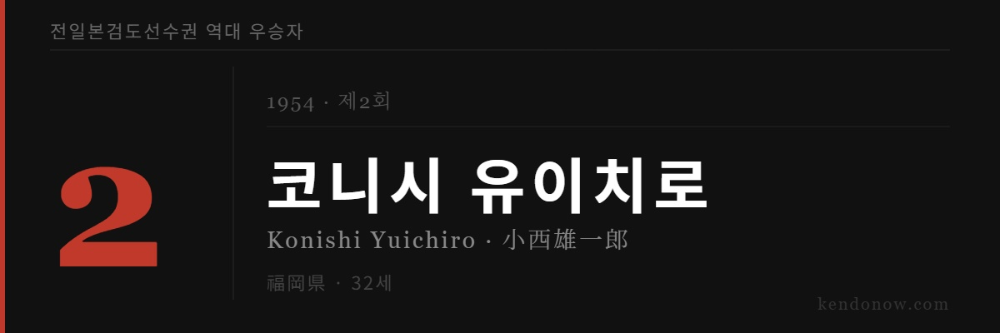

🌐 English version available — use the KO/EN button in the top right corner.
※ 제2회 대회에 관한 상세 기록이 충분히 남아있지 않아 확인된 사실 위주로 정리했습니다.

무명의 작은 거인. 전국을 평정하다.
첫 대회의 흥분이 채 가라앉기 전, 제2회 전일본검도대회에서 대파란이 일었다.
1954년 10월 10일, 도쿄 양국 메모리얼 홀에서 열린 제2회 대회를 제패한 것은 후쿠오카현 대표 코니시 유이치로(32세)였다. 서일본철도(西鉄) 소속 회사원으로 하카타역 앞 버스 터미널 소장이었다. 키 155cm의 작은 체구. 무도전문학교(武専)나 경찰 특련 같은 엘리트 코스를 거치지 않은 재야의 검도인이었다. 연사(錬士, 렌시) 칭호를 보유한 상당한 수준의 검도인이었음에도 대회 전까지 그의 이름을 아는 이는 거의 없었다.
토너먼트 결과
| 라운드 | 상대 | 비고 |
|---|---|---|
| 1회전 | 시모이 히사(三重) | |
| 2회전 | 와다 마사키요(大阪) | 무전 출신, 경찰 |
| 3회전 | 오니시 토모지(島根) | 무전 출신, 경찰 사범, 38세 |
| 4회전 | 스즈키 모리하루(愛知) | 제1회 대회 3위 |
| 준결승 | 아베 사부로(東京) | 제1회 대회 준우승, 훗날 범사(範士) 9단 |
| 결승 | 나카오 이와오(兵庫) | 효고현경 지도자, 38세 |
준결승에서 제1회 대회 준우승자 아베 사부로(35세)를, 결승에서 효고현경 지도자 나카오 이와오(38세)를 연장 끝에 꺾고 우승을 차지했다. 이름 없는 회사원이 경찰 강호들을 모두 제치고 정상에 오른 것이다.
코니시의 우승 이후 행적에 관한 상세한 기록은 남아있지 않다. 이듬해 대회부터는 다시 경찰과 엘리트 출신 선수들이 정상을 장악하기 시작했다. 코니시의 우승은 대회 초창기, 아직 누구에게나 열려있던 시절의 이야기였다.
참고 자료
- 全日本剣道選手権大会, Wikipedia (일본어)
https://ja.wikipedia.org/wiki/全日本剣道選手権大会 - bushizo.com, 『全日本剣道選手権大会 歴代優勝者・入賞者一覧（第1回～第73回）』
https://bushizo.com/media/201912/3651/ - 大阪府剣道連盟, 全日本剣道選手権大会 歴代優勝者一覧
https://osa-kendo.or.jp/award/convention/all_japan